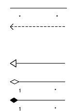

Обєктно-орієнтована модель програмної системи. Розробка діаграми класів.
Діаграми иМ1-, системи, що пояснюють внутрішній устрій
Деякі автори [16] рекомендують використати при описі вимог діаграми ЦМЬ, що описують створювану систему через її компоненти(класи, об'єкти), стосунки і взаємодії між ними. Цей підхід має свої обмеження(див. Принцип 2).
Діаграма класів. Для створення діаграми класів необхідно:
- Здійснити пошук класів(ключових компонент проблемної області).
- Для кожного знайденого класу визначити його ім'я, основні атрибути, операції і(чи) відповідальності.
- Досліджувати стосунки знайдених класів.
Класи на діаграмі представляються у вигляді прямокутників, відношення - у вигляді ліній, що зв'язують прямокутники. Лінії різного типу графічно відрізняються різним штрихуванням і стрілками.
Прийнято виділяти [14] 3 рівні абстракції класів : концептуальний рівень, рівень специфікації, рівень реалізації. Аналіз вимог розумно супроводжувати діаграмами, що відбивають концептуальний рівень. На цьому рівні при описі класів доцільно вказати їх найменування і відповідальності. Атрибути і операції можна не вказувати, або ввести тільки найосновніші, відклавши їх дослідження на пізніші стадії деталізації.
Стосунки, що підлягають аналізу на концептуальному рівні, - це:
Таблиця 1 - Стосунки
 | асоціація(іменований зв'язок) |
залежність (зміни в одному класі приводять до змін в другом) | |
узагальнення / генералізація(родовидовое відношення), | |
агрегація(відношення «частина-ціле») | |
композиція(відношення «частина-ціле», що однозначно регламентує кількість і склад частин цілого). |
Діаграма класів показує статичну структуру проблемної області. Для аналізу взаємодії об'єктів - екземплярів класу в ході реалізації варіанту використання в UML передбачені дві діаграми взаємодії : діаграма кооперації і діаграма послідовності.
На думку автора, якщо діаграма класів у ряді випадків і може розглядатися, як артефакт, що пояснює структуру проблемної області, то діаграми взаємодії навряд чи варто розглядати в якості виразного мовного засобу, що ілюструє вимоги до системи в діалозі «Замовник-виконавець». Проте, у відповідність з Принципом 3 свободи вибирання мовних засобів, аналітик, що вирішив використати ці діаграми, може ознайомитися з ними в спеціальній літературі [14-15].